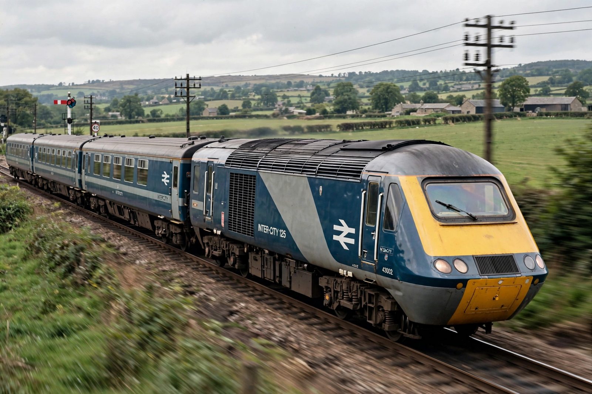

British Rail
From Wikipedia, the free encyclopedia

British Rail (from 1965, the brand of the British Railways Board) was the state-owned railway company that operated most of Great Britain's rail transport from nationalisation in 1948 until privatisation in the 1990s. It inherited a war-worn network, dieselised and electrified it, cut a third of it under the Beeching cuts, and created icons like the InterCity 125 — while its public image swung between national treasure and national joke ('the wrong kind of snow').
History
The 1955 Modernisation Plan replaced steam (last runs 1968) with diesels; Dr Richard Beeching's 1963 report closed 5,000 miles of line and 2,363 stations, reshaping rural Britain. The 1970s–80s brought sectorisation, the Advanced Passenger Train's failure, the beloved HST/InterCity 125 (the world's fastest diesel train, in service for over 40 years) and a long argument over investment.
Privatisation and after
John Major's government split BR into train operators, Railtrack and rolling-stock companies (1994–97), a fragmentation blamed by critics for the Hatfield crash era and praised by others for doubling passenger numbers. Since 2018 policy has moved back toward integration — the Williams-Shapps plan and the new Labour government's Great British Railways and progressive renationalisation of franchises from 2025 — ending the BR story with a partial return to its model.